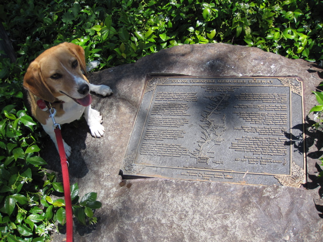

Up Next-->

Stone Turnpike Memorial Freeway
At the rest stops in Lakehead (a town on Lake Shasta) on both sides of I-5, plaques commemorate the Stone Turnpike, which once connected what is now the Lake Shasta area to Dunsmuir near Mt. Shasta. The turnpike wasn't made of stone, but was built by Elias Stone.